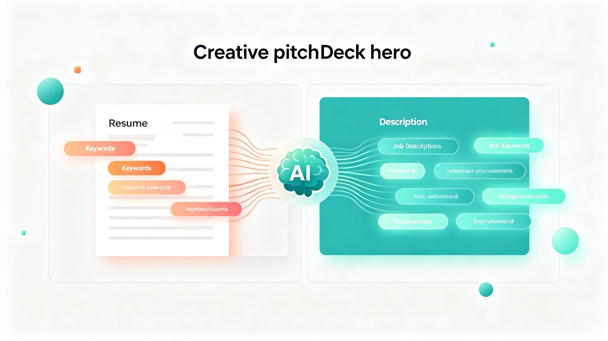

智配简历 ResumeMatch AI
基于大语言模型的智能简历项目重包装平台 —— 帮你把现有经历讲出岗位想听的样子，缺什么项目也告诉你
创意名称 & 创意介绍
Core Concept & Product Vision
想解决
什么问题
Problem Statement
求职者往往并非能力不足，而是已有的项目经历表述与目标岗位JD不匹配。同一段实习或项目，投A岗位时应该强调性能优化，投B岗位时应该突出数据治理，但大多数人只会写一份"万能"描述。更糟糕的是，当JD要求的技术栈或项目类型与自身经历存在差距时，求职者完全不知道应该补充什么类型的项目才能补齐短板。现有的简历工具只告诉你"哪里写得不好"，却不会告诉你"这段经历还能怎么讲"和"缺什么项目该补"。
我发现很多人的简历里其实有不错的项目，但描述角度完全偏离了目标岗位的关注点。比如一个做过电商后台的同学，投"高并发系统"岗位时还在写"实现了CRUD功能"，却忘了突出QPS优化和缓存策略；投"数据平台"岗位时又没有提到数据清洗和报表生成。同时，当JD要求"有微服务实战经验"而简历里只有单体项目时，很多人会直接放弃投递，却不知道只需补充1-2个针对性的小项目就能跨越门槛。这个洞察让产品方向从"润色文字"升级为"重新包装经历 + 智能推荐补充项目"。
为什么会
想到做这个
Inspiration
大概是
什么产品
Product Form
用户上传已有简历并粘贴目标岗位JD，AI做两件事：第一，逐个项目分析其与JD的匹配度，重新包装项目描述的角度、关键词和量化指标，让同一段经历在不同岗位下呈现不同侧重点；第二，识别项目经验缺口，当JD要求的能力在现有项目中未被覆盖时，推荐具体可落地的补充项目方案（含技术栈、核心功能点和学习路径）。产品还附带ATS格式检测和多版本管理。
核心功能详解
Core Features & User Flow
● 项目经历智能重包装
AI解析简历中的每个项目，结合目标JD重新定位亮点。同一段"用户管理系统"，投前端时包装组件化UI与虚拟滚动优化，投后端时包装API设计与Redis缓存策略 —— 不虚构经历，只换讲法。
● 项目缺口分析与补充推荐
当JD要求的能力未被现有项目覆盖时，系统给出可落地的补充方案：推荐什么类型的项目、用什么技术栈、核心功能点有哪些、预计多久能做完 —— 不是让你"学Redis"，而是告诉你"做一个秒杀系统，用Redis做预减库存，3天搞定"。
用户使用流程
目标用户及痛点
Target Users & Pain Points
面向哪些用户
有项目但"讲不好"的开发者
简历里有3-5个项目，但描述千篇一律。需要AI帮他们把同一段经历按不同岗位重新包装，突出对应的技术亮点。
项目经验有缺口的求职者
JD要求的技术栈或项目类型自己没有做过，不知道补什么项目、用什么技术栈、做到什么程度算"够"。
准备转行的技术人员
已有技术基础但目标岗位需要的项目类型不同（如从Web转AI、从后端转全栈），需要快速补齐对应项目经验。
在什么场景下使用
同一份简历投不同岗位
已有项目经历，但投前端、后端、算法岗需要不同讲法，AI帮你一键生成多个版本。
JD要求的技术栈没用过
岗位JD要求"有高并发经验""会微服务"，自己没有做过，需要知道补什么项目、怎么补。
准备转行或转方向
从Web开发转AI工程、从后端转全栈，需要快速补齐目标方向的项目背书。
当前痛点
- 项目描述"一套万能"：同一段项目经历投前端、后端、数据岗都用同一套描述，没有根据JD调整侧重点，导致面试官看不到匹配度。
- 不知道还能怎么讲：明明做了很多事，但写简历时只会罗列功能模块，不会从技术深度、业务价值、量化成果等角度包装。
- 缺项目不知道补什么：JD要求"有高并发经验""有微服务经验"，自己没有就直接放弃投递，却不知道该补充什么类型、规模的项目。
- 补了项目怕"露馅"：网上找的练手项目千篇一律（秒杀、博客、商城），面试官一眼看出是"面试项目"，反而减分。
- 跨方向转型无从入手：从Java后端想转Go云原生，从Web想转AI工程，不知道新方向需要什么样的项目背书。
价值与意义
Value & Impact
60分钟 → 10分钟
从"偏题"到"命中"
从迷茫到可执行
📈 商业价值
采用 Freemium（免费增值） 商业模式。免费版提供项目匹配度诊断和1次/月的重包装体验；付费版（约 ¥39-99/月）解锁无限项目重包装、完整的补充项目推荐方案（含代码框架、学习路径）、以及多版本管理。相比泛用型简历工具，本产品聚焦技术岗位的项目经验优化，差异化更明确。国内技术岗位求职者（IT/互联网/AI）每年超过 500万人，且付费意愿强（为拿到心仪offer愿意投入）。
⚡ 效率提升
将"针对每个JD重新思考项目描述"的时间从 30-60分钟缩短至5分钟。AI不仅生成重包装后的文案，还会解释"为什么要这样改"，帮助用户理解不同岗位的关注逻辑。补充项目推荐更是直接给出可执行的技术方案（不是泛泛的"学Redis"，而是"用Redis做预减库存，代码结构如下"），让求职者的准备时间花在刀刃上。
🌎 社会价值
降低技术求职的信息壁垒。很多有能力的人因为不会包装项目或不知道补什么项目而错失机会，这本质上是信息差而非能力差距。本产品让普通开发者也能获得原本只有资深工程师或付费职业顾问才能提供的项目策略指导，帮助更多人跨越"简历关"进入"能力展示"环节。
"不是你没有做过，只是你还没有找到对的讲法 —— 以及还不知道该补什么。"